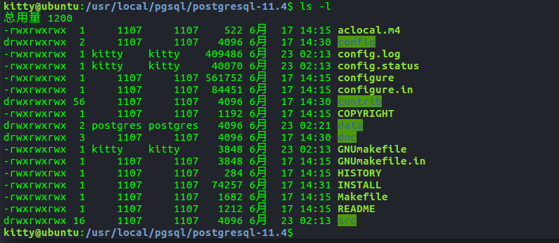
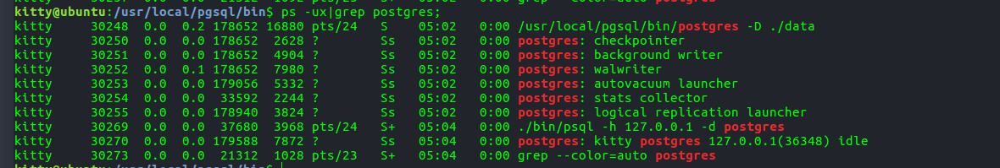

一、环境配置
1 | Ubuntu 16.04 |
二、源码下载解压
https://www.postgresql.org/ftp/source/,选择一个版本的,这里下载v11版本系列

解压到指定目录&&新建用户（非强制只是为了方便管理
在/usr/local/下新建目录pgsql,记得chmod -R 777 pgsql否则后面打log会崩
然后将下载的压缩包丢到pgsql目录下解压
1 | tar zxvf postgresql-11.3.tar.gz |
解压后大概是这么些文件

三、安装过程
配置
1 | cd /usr/local/pgsql/ |
坑1：error:readline library not found
解决办法apt-get install libreadline-dev
坑2：error: zlib library not found
解决办法apt-get install zlib1gapt-get install zlib1g.dev
如果没有报错了,就可以去解压包里执行make了
1 | make |
如果不出意外大概需要一两分钟出现
1 | All of PostgreSQL successfully made. Ready to install. |
然后执行install
1 | make install |
出现
1 | PostgreSQL installation complete. |
安装完毕后应该在pgsql目录下会多一些bin,include,lib等文件夹
四、配置用户环境
据我的理解是一个用户的数据库数据放在一个文件夹里储存？不知道是不是这样
先增加一个用户使用数据库
1 | adduser postgres //添加一个名为tommy的用户 |
然后转换到postgres用户下，在刚刚新建的pgsql文件夹下mkdir data，如果有啥权限问题，也chmod -R 777 data/就完事了
ps:将用户添加到sudoers中操作（防止出现postgres用户不能sudo
- 首先切换到root用户
- 然后修改/etc/sudoers 权限 使其为可写
1 | chmod u+w /etc/sudoers |
然后在下面的
1 | root ALL=(ALL) ALL |
这里增加自己需要的用户比如
1 | root ALL=(ALL) ALL |
最后一定要把权限修改回来：chmod u-w /etc/sudoers
五、初始化和启动数据库
初始化
1 | su postgres |
启动数据库
1 | ./bin/pg_ctl start -D ./data/ -l logfile |
重启和关闭
1 | ./bin/pg_ctl restart -D ./data/ |

然后可以执行
./bin/psql进入命令行
六、创建数据库和用户
1 | 执行 ./createdb kitty 创建kitty数据库 |
访问数据库后也可以用sql命令来新建用户
1 | create user postgres with password 'xxx'; |
七、配置远程访问
1）修改配置文件pgsql/data/postgresql.conf
1 | vim /usr/local/pgsql/data/postgresql.conf |
修改监听地址：
1 | #listen_addresses='localhost' |
2）修改配置文件/pgsql/data/pg_hba.conf：
1 | vim /usr/local/pgsql/data/pg_hba.conf |
添加一条IP授权记录，可以对一个网段授权
1 | # IPv4 myhost connections: |
八、使用pwngdb调试
首先查看postgres进程，有两个方法
方法1：先查看客户端未连接后端的postgres进程
1 | ps -aux | grep postgres |
然后执行
1 | ./psql -h 127.0.0.1 -d postgres |
再次查看进程
,然后还是不确定
方法2：在客户端交互界面查询后端进程ID
使用postgres=# select pg_backend_pid();
就能确定是30270了
然后pwngdb出场
8.1、设置gdb和屏蔽无用中断信号
1 | sudo gdb attach 4208 |
8.2、设置断点/随便设置，这里为了测试是打在计算结果处
1 | pwndbg> b ExecResult |
8.3、客户端发起查询
1 | postgres=# select 1+1; |
此刻应该被断点断住的
8.4、调试
1 | pwndbg>c |

查看调用栈